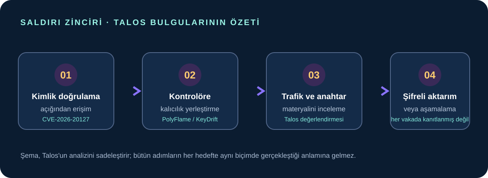
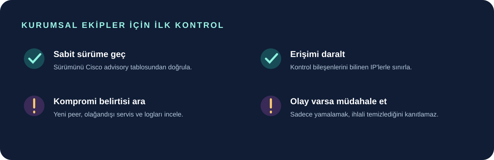

Cisco Talos, Cisco Catalyst SD-WAN kontrol bileşenlerini hedef alan ve KeyDrift adını verdiği zararlı yazılım ailesini 28 Ekim’de yayımladığı teknik incelemeyle anlattı. Araştırmacılara göre saldırganlar, Şubat 2026’da açıklanan CVE-2026-20127 kimlik doğrulama açığını kullanarak bazı sistemlere erişti. Talos, yazılımın ağ kontrol trafiğini inceleyebildiğini ve ağ iletişiminde kullanılan hassas anahtar materyalini toplamaya yönelik tasarlandığını değerlendiriyor.
Bu gelişme, Cisco SD-WAN kullanan kurumların ürün sürümlerini ve günlüklerini kontrol etmesini gerektiriyor. Açık, evdeki standart modem veya sıradan Cisco Wi-Fi yönlendiricileriyle aynı şey değil; Cisco Catalyst SD-WAN Controller, Manager ve Validator bileşenleriyle ilgili. Aşağıdaki bilgiler bir olay müdahale ekibinin yerini tutmaz ve sisteminde ihlal olduğunu tek başına göstermez.

KeyDrift nedir, ne bulundu?
Cisco Talos, UAT-11473 adını verdiği saldırı kümesinin KeyDrift adı verilen birden fazla bileşenli araç setini kullandığını bildiriyor. Talos’un analizinde bazı bileşenlerin Cisco’nun SD-WAN kontrol yazılımındaki meşru süreçlerin içinde çalışabildiği, kalıcılık sağlamaya ve kontrol trafiğini incelemeye yönelik olduğu aktarılıyor. Bu yöntem, basit bir dosya taramasının tek başına yeterli olmayabileceği anlamına geliyor.
Talos; gözlenen hedefler arasında uzay ve uydu hizmetleri, savunma-havacılık teknolojileri ve politika araştırmalarını sayıyor. Araştırma “tarihi faaliyet” olarak tanımlanıyor ve tüm saldırıların ne zaman gerçekleştiği açıklanmıyor. Talos, faaliyetin altyapısının Lumen’in “Silent Train” olarak adlandırdığı ağla önemli ölçüde örtüştüğünü yüksek güvenle değerlendiriyor. Bu benzerlik tek başına iki faaliyetin aynı aktöre ait olduğunu kanıtlamıyor; burada kesin bir devlet veya grup atfı yapmıyoruz.
Açık hangi sistemleri etkiliyor?
Cisco’nun güvenlik duyurusuna göre CVE-2026-20127; eski adıyla vSmart olan Catalyst SD-WAN Controller’ı, vManage olarak bilinen Manager’ı ve vBond adıyla anılan Validator’ı etkileyebiliyor. Cisco, etkinin yapılandırmadan bağımsız olabileceğini ve hem kurum içi kurulumları hem de bazı barındırılan SD-WAN ortamlarını kapsadığını belirtiyor. Açık, kimlik doğrulaması yapılmamış uzaktaki bir saldırganın belirli sistemlerde yüksek ayrıcalıklı bir iç hesaba erişmesine imkân verebilir.
Cisco bu zafiyete CVSS 10.0 önem derecesi veriyor ve düzeltme içeren yazılım sürümlerini yayımlamış durumda. Sabit sürümler yazılım dalına göre değişiyor: örneğin 20.9 için 20.9.8.2; 20.12 için 20.12.5.3 veya 20.12.6.1; 20.15 için 20.15.4.2; 20.18 için 20.18.2.1. Eski ve bakım süresi bitmiş dallarda güncel, desteklenen bir sürüme geçiş gerekebilir. Sürüm tablosu zaman içinde değişebileceğinden yükseltme planından önce Cisco’nun duyurusunu ve uyumluluk matrisini kontrol edin.
Kurumların bugün kontrol edebileceği noktalar
- Varlık envanterini çıkarın: Controller, Manager ve Validator örneklerini; dağıtım biçimi ve mevcut sürümleriyle birlikte belirleyin. Yalnızca internete açık cihazları değil, ağ içindeki kontrol bileşenlerini de değerlendirin.
- Sabit sürüme yükseltin: Cisco’nun ürününüz ve dalınız için verdiği ilk düzeltilmiş sürümü kullanın. Büyük ölçekli ağlarda önce uyumluluk ve bakım penceresini planlayın; yükseltme sonrasında kontrol bağlantılarını doğrulayın.
- Erişimi kısıtlayın: Cisco, kurum içi kurulumlarda 22 ve 830 numaralı portlara erişimi bilinen kontrol bileşenleri ve gerekli güvenilir adreslerle sınırlandırmayı geçici bir azaltım olarak öneriyor. Ağ kurallarını uygulamadan önce kendi topolojinize etkisini değerlendirin; Cisco bu adımları güvenlik açığını düzelten bir yama olarak tanımlamıyor.
- Günlükleri ve eş bağlantılarını inceleyin: Cisco, özellikle
/var/log/auth.logdosyasındaki beklenmeyenvmanage-adminoturumlarını, bilinmeyen IP’leri ve alışılmadık kontrol eşleşmelerini kontrol etmeyi öneriyor. Adres, zaman, cihaz rolü ve bakım kayıtlarını kurum envanterinizle karşılaştırın. - Şüphe varsa olay müdahalesi başlatın: Yama uygulamak, daha önce gerçekleşmiş olabilecek bir ihlalin temizlendiğini kanıtlamaz. Şüpheli bulgu varsa logları koruyun, etkilenen sistemleri kurum prosedürünüze göre inceleyin ve Cisco TAC ya da yetkin bir olay müdahale ekibinden destek alın.

Ev kullanıcıları için ne anlama geliyor?
Bu haber, ev kullanıcısının modeminde otomatik olarak KeyDrift bulunduğu anlamına gelmiyor. İncelenen konu, kurumların geniş alan ağlarını yöneten Cisco Catalyst SD-WAN kontrol altyapısı. Ev ağında da yönlendirici ve modem yazılımını güncel tutmak, yönetici arayüzünü internete açmamak ve varsayılan parolaları değiştirmek iyi güvenlik alışkanlıklarıdır; ancak bunlar bu özel Cisco açığından etkilenildiği anlamına gelmez.
Sık sorulan sorular
- CVE-2026-20127 nedir? Cisco Catalyst SD-WAN kontrol bileşenlerinde kimlik doğrulama atlatılmasına yol açabilen kritik bir güvenlik açığıdır.
- Hangi Cisco ürünlerini kontrol etmeliyim? Catalyst SD-WAN Controller, Manager ve Validator bileşenlerini; kullandığınız sürüm ve dağıtım tipine göre Cisco duyurusuyla karşılaştırın.
- Bu haber ev modemimin ele geçirildiğini mi gösteriyor? Hayır. Haber, kurumsal SD-WAN kontrol sistemlerini konu alıyor; ev modemi için ihlal kanıtı değildir.
- Yama yeterli mi? Yama açığı kapatır; geçmişte ihlal yaşanıp yaşanmadığını tek başına yanıtlamaz. Günlükler ve şüpheli bağlantılar ayrıca incelenmelidir.
Sonuç
KeyDrift bulgusu, kurumların SD-WAN kontrol katmanını internetten erişime ve eski yazılım sürümlerine karşı dikkatle koruması gerektiğini hatırlatıyor. İlk adım etkilenen Cisco bileşenlerini envanterde bulmak, ardından resmi sürüm tablosuna göre yükseltmek ve günlüklerde beklenmeyen erişim izlerini araştırmak. Talos’un altyapı örtüşmesi değerlendirmesini kesin aktör atfı gibi sunmamak ve güvenlik ihlali şüphesini yalnızca güncelleme yaparak kapatılmış saymamak gerekiyor.
Kaynaklar
- Cisco Talos: Inside KeyDrift, UAT-11473 activity on Cisco SD-WAN (28 Ekim 2026)
- Cisco Security Advisory: CVE-2026-20127, etkilenen ürünler, IOC kontrolleri ve düzeltilmiş sürümler
Son kontrol: 29 Ekim 2026. Güvenlik önerileri değişebileceğinden etkilenen sürüm ve düzeltmeleri Cisco’nun güncel duyurusundan yeniden doğrulayın. İçerik genel bilgilendirme amaçlıdır; olay müdahalesi veya üretim ortamı değişiklikleri için kurumunuzun uzman ekibine başvurun.